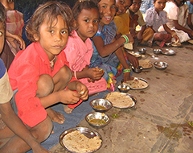
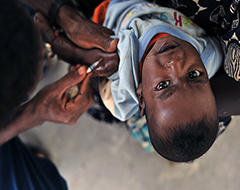
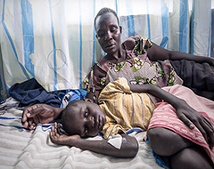
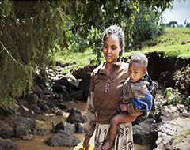
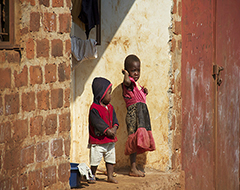

정기후원으로 어떻게 도울까?
- 교육
- 영양
- 예방접종
- 말라리아
- 건강
- 이동수단과 보호시설
월 3만원 정기후원으로
매월 공책 80권, 연필 290자루를 전달하고 어린이들이 공부할 수 있는 시설을 지원할 수 있습니다.
월 3만원 정기후원으로
매년 영양실조에 걸린 어린이 40명을 구하고 영양실조 예방 활동을 지원할 수 있습니다.
월 3만원 정기후원으로
소아마비에 걸리지 않도록 예방접종을 매월 어린이 50명에게 지원할 수 있습니다.
월 3만원 정기후원으로
매년 살충 처리된 모기장 100개와 말라리아 치료제 800정을 전달할 수 있습니다
월 3만원 정기후원으로
매월 어린이 300명에게 구강수분보충염을 제공하고 신생아와 영유아의 면역력을 높일 수 있는 보건 사업을 지원할 수 있습니다.
월 3만원 정기후원으로
원치 않는 결혼을 하는 여자 어린이, 일하느라 학교에 가지 못 하는 어린이, 강제로 전쟁터에 보내지는 소년병 어린이 등 어린이의 권리를 보호할 수 있습니다.
후원자님들이 있기에...
지금, 유니세프와 함께 정기후원을 시작해보세요.
후원하기